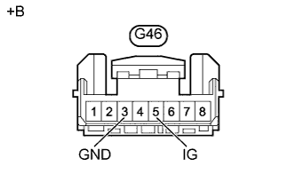

СИСТЕМА РУЛЕВОГО УПРАВЛЕНИЯ С УСИЛИТЕЛЕМ (за исключением моделей с 5L-E) > Цепь аварийной лампы состояния усилителя рулевого управления |
| 1.ПРОВЕРЬТЕ МУЛЬТИПЛЕКСНУЮ ШИНУ CAN |
Проверьте наличие кодов DTC системы передачи данных CAN.
Для моделей с левосторонним рулевым управлением и системой посадки и запуска:
См. указания на стр. Нажмите здесь.
Для моделей с левосторонним рулевым управлением без системы посадки и запуска:
См. указания на стр. Нажмите здесь.
Для моделей с правосторонним рулевым управлением и системой посадки и запуска:
См. указания на стр. Нажмите здесь.
Для моделей с правосторонним рулевым управлением без системы посадки и запуска:
См. указания на стр. Нажмите здесь.
| Результат | Следующий шаг | |
| DTC не выводится. | А | |
| DTC выводится. | Для моделей с левосторонним рулевым управлением и системой посадки и запуска | B |
| Для моделей с левосторонним рулевым управлением без системы посадки и запуска | C | |
| Для моделей с правосторонним рулевым управлением и системой посадки и запуска | D | |
| Для моделей с правосторонним рулевым управлением без системы посадки и запуска | E | |
|
| ||||
|
| ||||
|
| ||||
|
| ||||
| А | |
| 2.ПРОВЕРЬТЕ ЖГУТ ПРОВОДОВ И РАЗЪЕМ (ЭБУ РУЛЕВОГО УПРАВЛЕНИЯ С УСИЛИТЕЛЕМ – АККУМУЛЯТОРНАЯ БАТАРЕЯ И МАССА) |
|  |
Отсоедините разъем ЭБУ рулевого управления с усилителем.
Измерьте напряжение в соответствии со значениями, приведенными в таблице.
| Контакты для подключения диагностического прибора | Положение переключателя | Заданные условия |
| G46-5 (IG) - масса | Зажигание включено | 11 - 14 В |
Измерьте сопротивление в соответствии со значениями, приведенными в таблице ниже.
| Контакты для подключения диагностического прибора | Условие | Заданные условия |
| G46-3 (GND) - масса | Всегда | Менее 1 Ом |
| *a | Вид спереди разъема со стороны жгута проводов: (к ЭБУ рулевого управления с усилителем) |
|
| ||||
| OK | |
| 3.ВЫПОЛНИТЕ ДИАГНОСТИКУ В РЕЖИМЕ ACTIVE TEST С ПОМОЩЬЮ ПОРТАТИВНОГО ДИАГНОСТИЧЕСКОГО ПРИБОРА (СИСТЕМЫ ИЗМЕРИТЕЛЬНЫХ ПРИБОРОВ И ИНДИКАТОРОВ) |
Подсоедините портативный диагностический прибор к DLC3.
Включите зажигание и портативный диагностический прибор.
Выполните диагностику щитка приборов в режиме Active Test с помощью портативного диагностического прибора (Нажмите здесь).
| Информация на дисплее прибора | Испытываемое устройство | Диапазон регулирования | Замечание по диагностике |
| PPS Indicator | Контрольная лампа рулевого управления с усилителем | ON (ВКЛ) или OFF (ВЫКЛ) | Выполняйте проверку, когда автомобиль остановлен, а двигатель работает на холостом ходу. |
Убедитесь, что состояние контрольной лампы рулевого управления с усилителем изменяется в соответствии с командами Active Test.
|
| ||||
| OK | ||
| ||